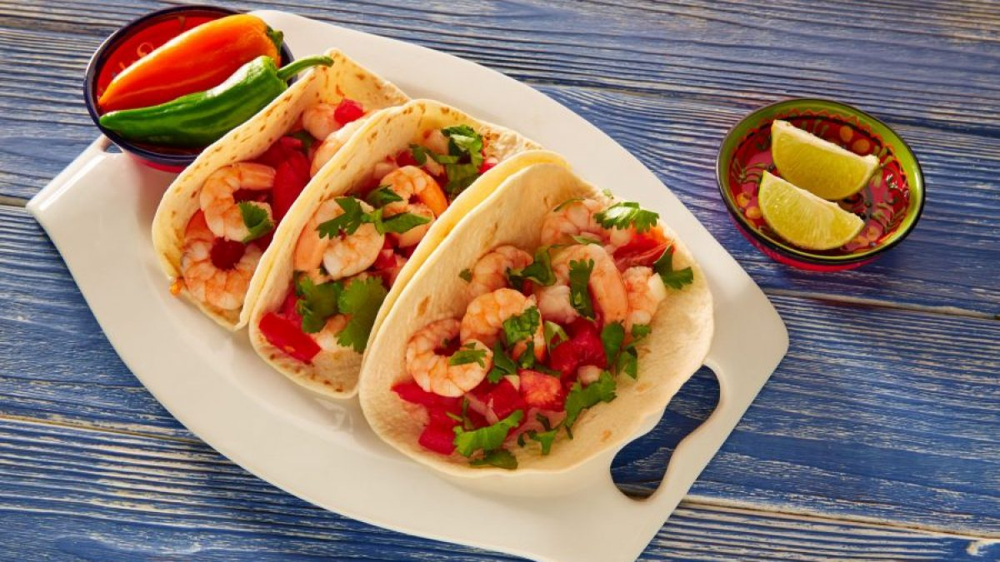

Jam packed full of flavour, these Mexican crunchwrap bites are super simple to throw together and even easier to cook in the airfryer.
Place mayonnaise, 65g (1/4 cup) Bulla Light Sour Cream, 1 tbsp seasoning, coriander, lime rind and juice and reserved jalapeño juice in a bowl. Stir until combined. Place in the fridge until required.
Place the chicken, remaining Bulla Light Sour Cream and remaining seasoning in a bowl and stir until well combined.
Working in batches, place 4 tortillas in the microwave and cook on High for 20 seconds or until soft. Transfer to a clean work surface. Top each tortilla with 1 tablespoonful chicken mixture, 1 tsp of beans, 1 tsp of corn, 1 jalapeño, 1 slice of tomato and 1 cheese slice half. Top each with two corn chips. Fold the tortilla up to enclose filling. Place, seam-side down, in the air fryer basket. Spray with oil. Cook at 180C for 5 minutes or until crisp. Repeat with remaining mixture, beans, corn, jalapeño, tomato and cheese in 3 more batches.
Arrange crunch wraps on a serving plate. Sprinkle with extra coriander. Serve with the Bulla Light Sour Cream dipping sauce.